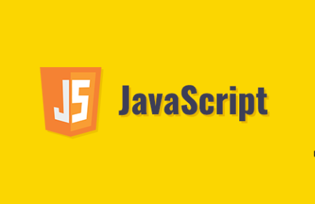

JavaScript je skriptni programski jezik, koji se izvršava u web pregledniku na strani korisnika. Napravljen je da bude sličan Javi, zbog lakšega korištenja, ali nije objektno orijentiran kao Java, već se temelji na prototipu i tu prestaje svaka povezanost s programskim jezikom Java. Izvorno ga je razvila tvrtka Netscape (www.netscape.com). JavaScript je primjena ECMAScript standarda. JavaScript s AJAX (Asynchronous JavaScript and XML) tehnikom omogućuje web stranicama komunikaciju sa serverskim programom, što čini web aplikaciju interaktivnijom i lakšom za korištenje.
